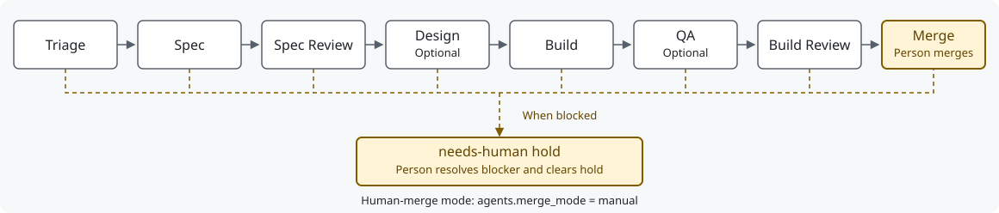

Bureau

Bureau takes Linear tickets through specification, implementation, QA and code review, with Spec Kit artifacts tracking the work. It installs skills, project instructions and pipeline scripts into your Git repository for Codex app tasks, Claude Code sessions or background provider CLIs. State lives in Linear and Git; there is no application backend to host.

The diagram shows human-merge mode; Design and QA run when enabled. A
needs-human hold pauses background pickup until a person
resolves the blocker and removes the label. See the stage protocol and state setup.
Safety model
- A person merges: set
agents.merge_mode: "manual"and configure a Merge state to park approved work for a human. The default isauto, so select manual mode explicitly. See merge authority. - Secrets stay filtered: branch-controlled code runs with Bureau service secrets and their environment carriers removed. This filters the environment; it does not hide files readable by the same account. See environment filtering.
- Each background run owns a disposable worktree: workers claim the ticket and checkout before running; held branches and unfinished work are preserved. App tasks use their current checkout. See workspace isolation.
Requirements
| Dependency | Needed for |
|---|---|
| Python 3.9+, Bash 3.2+, Git 2.26+, jq, curl | Installation and shared runtime. The shell filter needs Python on
the system default PATH and env with -0;
merge-only worker reuse needs Git 2.38+ |
specify-cli 1.2.2
(uv tool install specify-cli==1.2.2) |
Spec Kit initialization and resync, pinned by the installer |
Linear account and LINEAR_API_KEY in ignored
.env |
Shared ticket reads and transitions |
GitHub CLI (gh), authenticated |
PR creation and merge operations |
| Claude CLI and/or Codex CLI, authenticated | Providers selected for background stages; no provider CLI is required for a current Codex app task |
| tmux | Persistent pane launchers; app tasks and one-shot ticks do not need it |
| Node.js 18+ | Shared conflict-schedule CLI |
See setup prerequisites and provider configuration. Keep credentials out of tracked files; shell helpers call Linear's API directly.
Install
Keep one source clone at the selected release tag
(v3.8.0 once published) and expose it to the assistants you
use. See release
status for validation and limitations.
git clone --branch v3.8.0 --single-branch https://github.com/KaiaK808/bureau.git "$HOME/bureau-init"
mkdir -p "$HOME/.agents/skills"
ln -s "$HOME/bureau-init" "$HOME/.agents/skills/bureau-init"
# Optional Claude Code entry point:
mkdir -p "$HOME/.claude/skills"
ln -s "$HOME/bureau-init" "$HOME/.claude/skills/bureau-init"Preserve existing installations and links. This clone is pinned in
detached-HEAD state; upgrades select another published tag. In an
adopting Git repository, invoke
$bureau-init --target codex,
/bureau-init --target claude, or
--target both. For both, choose the active Spec Kit
integration. Refresh skill discovery after installation.
The installer discovers Linear settings, writes
.bureau.json, initializes pinned Spec Kit and installs the
selected interfaces and runtime assets. Codex uses
.agents/skills and AGENTS.md; Claude uses
.claude/commands, .claude/skills and
CLAUDE.md. Resync preserves user instructions and the constitution;
.bureau-install.json records customization hashes and
source revisions. See the setup
procedure for agent selection, optional CI and installed assets.
Choose how to work
Replace ISSUE with your Linear issue key.
| Mode | Where creative work runs | Entry point |
|---|---|---|
| Codex app task | Current task, using its selected model and tools | $bureau ISSUE through review |
| Claude interactive | Current Claude Code session | /linear-to-spec ISSUE,
/linear-implement ISSUE |
| Bounded background tick | Configured provider CLI in a claimed disposable worktree | bash scripts/bureau-tick.sh --no-merge |
| Continuous background pipeline | Configured provider CLIs, supervised dispatcher/tmux | bash scripts/start-bureau-v2.sh |
App review and bounded ticks stop before merge by default. Background
pipelines in auto merge mode can merge after approval and the complete
CI/base gate; --no-merge preserves a review-only boundary.
Codex support has local fixture coverage; qualify a representative live ticket
before unattended adoption.
Work in a Codex app task
Use $bureau spec ISSUE,
$bureau implement ISSUE, $bureau qa ISSUE,
$bureau review ISSUE, or
$bureau ISSUE through review. These work in the current
task without launching a nested model. $bureau status
inspects ownership and saved runs; $bureau resume RUN_ID
continues preserved work.
The app
setup guide supplies setup/status/test actions for app settings. Set
repo.test_command to the project's real tests. The app
generates its own local-environment configuration; Bureau preserves
unrelated .codex settings.
The stage protocol checks state IDs, ownership, current HEAD, canonical branch and completion evidence before advancing a ticket. A review request stops at review; explicitly authorized automated merging still uses the complete merge gate.
Background execution
Set agents.runner to claude (legacy
default) or codex; individual stages can select another
runner. Use provider-specific model
settings when mixing providers.
# Read-only checks, then one bounded stage:
python3 scripts/bureau-doctor.py --mode background
bash scripts/bureau-tick.sh --no-merge
# One named ticket through review:
bash scripts/shepherd.sh --no-tmux --no-merge ISSUE
# Pause future dispatch; existing work finishes normally:
python3 scripts/bureau-runtime.py pause
python3 scripts/bureau-runtime.py unpauselogs/bureau-tick.json distinguishes waits, advancement,
Done, review boundaries and failures; provider evidence lives under
logs/provider-runs/. Missing usage or cost means
unavailable, not zero. The supervision
guide covers notifications, requested app scheduling and conflict
scheduling. Installation does not start recurring automation.
The tmux launchers run one continuous dispatcher with two lanes by
default. Startup requires explicit
agents.file_overlap_gate: true, even for one lane or
dry-run; otherwise it exits 24. Update all writers together before
enabling it. agents.parallel_lanes controls process lanes
separately from the ticket cap. See continuous
dispatch.
| Operation | Entry point |
|---|---|
| Preview a batch schedule | bash scripts/orchestrate.sh --execute --schedule schedule.json --max-concurrent 3 --no-merge --dry-run |
| Execute that reviewed schedule | Repeat without --dry-run; a review stop halts its
serial lane |
| Port an upstream change | bash scripts/upstream-port.sh --sha COMMIT or
--pr NUMBER, after configuring the upstream and build/test
commands |
The operations reference
covers these modes, dry-run limits and multiple repositories.
agents.max_concurrent_issues: 1 limits counted tickets;
manual Merge is excluded unless
agents.max_concurrent_include_merge: true, and Build Review
always counts. Ownership and schedule validation remain required.
Update and migrate
Stop drivers and preserve unfinished work and customizations, update
the source tag and refresh discovery, then preview and resync each
adopting repository. Keep the existing target selection; the example
updates scripts and interfaces for both hosts. Use
/bureau-init with the same arguments in Claude Code. The migration guide covers release-specific
prerequisites, additional scopes, conflicts, validation and rollback;
the release record lists changes and
limits. Updating the clone or running --update alone does
not refresh installed assets. Restart drivers together and qualify a
representative ticket before unattended use.
$bureau-init --resync-interfaces --resync-scripts --target bothDocumentation
| Reference | Contents |
|---|---|
| Configuration | State maps, stage toggles, provider settings and overrides |
| Provider runtime | Auth, permissions, structured results, timeouts and evidence |
| Operator cheat sheet | App tasks, one-shot runs and batch scheduling |
| Exit codes | Failure, quota, ownership and stop outcomes |
| Recipes | Single-flight, provider mixing and dry-run examples |
| Troubleshooting | Diagnostics, recovery and permissions |
| Token efficiency | Optional Claude capabilities and their limits |
| Upgrade guide | Source update, per-repository resync, conflicts and rollback |
| Releases | Release status, versioning and publication checklist |
| Acceptance record | Automated coverage and live adoption checks |
The same documents are available as styled HTML. Contributions follow AGENTS.md and CONTRIBUTING.md; see them for source layout and validation.
Built by Kai Ebert / Brainhuggers under the MIT license. See SECURITY.md, CODE_OF_CONDUCT.md and NOTICE.